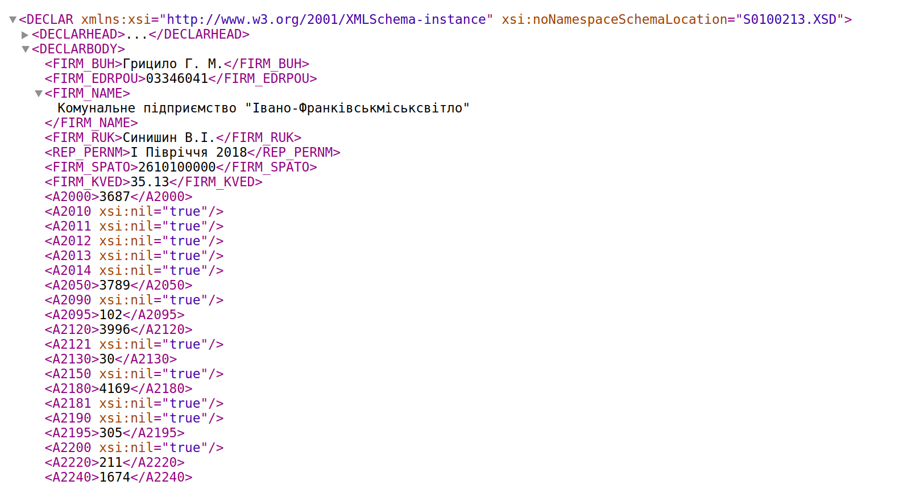

| Критерій | Характеристика |
| Нормативно-правові акти, які визначають створення, збір, зберігання, використання й поширення даних | Постанова Кабінету Міністрів України від 28 лютого 2000 року № 419 “Про затвердження Порядку подання фінансової звітності”, Наказ Міністерства фінансів України “Про затвердження Національного положення (стандарту) бухгалтерського обліку 1 «Загальні вимоги до фінансової звітності»” від 07.02.2013 № 73, Наказ Міністерства економічного розвитку та торгівлі України “Про затвердження Порядку складання, затвердження та контролю виконання фінансового плану суб'єкта господарювання державного сектору економіки” від 02.03.2015 № 205, Реєстр форм електронних документів Державної фіскальної служби України |
| Розпорядники даних | Державні комерційні та казенні підприємства, господарські товариства з державною часткою у статутному капіталі понад 50% чи іншою часткою, яка дає можливість вирішального впливу. |
| Інформація, що створюється, збирається, зберігається й поширюється | Форми звітності, затверджені додатками 1 та 2 Національного положення (стандарту) бухгалтерського обліку 1 «Загальні вимоги до фінансової звітності» (Наказ Міністерства фінансів України від 07.02.2013 № 73). Державна фіскальна служба України веде Реєстр форм електронних документiв для кожної з форм. |
| Способи оновлення | Подання звіту за новий звітний період (квартал). Річний звіт подається разом зі звітом за четвертий квартал |
| Частота оновлення інформації | Щокварталу (в строки, що встановлені законодавством для подання фінансової звітності) |
| Тип даних | Структуровані |
| Формати файлів | Рекомендований формат — XML, можливі — XLSX, ODS |
Розпорядниками набору є державні комерційні та казенні підприємства, господарські товариства, у статутному капіталі яких більше 50 відсотків акцій (часток) прямо чи опосередковано належить державі відповідно до частини 2 статті 22 Господарського кодексу України. Вимоги до фінансової звітності суб’єктів затверджені Національним положенням (стандартом) бухгалтерського обліку 1 «Загальні вимоги до фінансової звітності» (далі — Положення). Форми звітності визначені в додатках 1 та 2 до Положення. Державна фіскальна служба України веде Реєстр форм електронних документiв, що використовуються для подачі електронної звітності (таблиця 1).
Фінансова звітність надається Державній фіскальній службі України, Державній службі статистики України, органам, до сфери управління яких належать підприємства та іншим суб'єктам відповідно до пункту 2 Порядку, затвердженого Постановою КМУ від 28 лютого 2000 р. № 419. Крім цього, питання подачі фінансової звітності до суб’єктів управління визначені пунктом 6 Порядку складання, затвердження та контролю виконання фінансового плану суб’єкта господарювання державного сектору економіки, затвердженого Наказом Міністерства економічного розвитку та торгівлі України від 02.03.2015 № 205.
Таблиця 1 — Перелік форм звітності та їх ідентифікатори
| Назва форми | Номер форми | Код за Державним класифікатором управлінської документації ДК 010-98 | Ідентифікатор форми електронного документа |
| Баланс (Звіт про фінансовий стан) | 1 | 1801001 | J0900108 |
| Звіт про фінансові результати (Звіт про сукупний дохід) | 2 | 1801003 | J0900207 |
| Звіт про рух грошових коштів (за прямим методом) | 3 | 1801004 | J0900904 |
| Звіт про рух грошових коштів (за непрямим методом) | 3-н | 1801006 | J0901602 |
| Звіт про власний капітал | 4 | 1801005 | J0901005 |
| Консолідований баланс (Звіт про фінансовий стан) | 1-к | 1801007 | J0901702 |
| Консолідований звіт про фінансові результати (Звіт про сукупний дохід) | 2-к | 1801008 | J0901801 |
| Консолідований звіт про рух грошових коштів (за прямим методом) | 3-к | 1801009 | J0901902 |
| Консолідований звіт про рух грошових коштів (за непрямим методом) | 3-кн | 1801010 | J0902002 |
| Консолідований звіт про власний капітал | 4-к | 1801011 | J0902102 |
Для оприлюднення фінансової звітності рекомендовано використовувати формат XML-документів для подачі звітності у Державну фіскальну служба України та Міністерство економічного розвитку та торгівлі України. Існує два способи отримання даних набору:
Якщо відкрити експортований файл у веб-переглядачі (Google Chrome або Mozilla Firefox), він матиме вигляд, зображений на рисунку 1. Такі дані не є придатними для сприйняття людиною. Однак, якнайкраще підходять для машинної обробки. Для користувачів, що не мають навичок роботи з XML-звітами, ресурси набору можна продублювати у форматі електронних таблиць (XLSX, ODS).
Увага! На порталі відкритих можна розміщувати лише XML-файли, що призначені для подачі звітності в ДФС і МЕРТ. Іншими словами, такі XML-файли можна власноруч імпортувати/експортувати в/з Електронного кабінета платника ДФС, Єдиного вікна подання електронних документів МЕРТУ або іншого програмного забезпечення. Не допускається оприлюднення звітів у форматах PDF, CSV і XML-файлів (збережених через Microsoft Excel або його аналоги). Такі дані не є машиночитаними.
Оновлювати набір необхідно щоквартально разом з поданням суб'єктами господарювання звітності за новий період. Для оновлення необхідно додавати у набір нові ресурси, що містять звіти.
Рисунок 1 — Приклад електронного документа відкритий у веб-переглядачі Google Chrome

Назви ресурсів варто систематизувати за певним шаблоном. Вони можуть складатися з коду ЄДРПОУ підприємства, номера, форми звітності, періоду звітування, що розділені знаком дефіс. Наприклад, назви ресурсів, що містять баланси (форма №1) підприємства з кодом ЄДРПОУ 01234567 за кожен квартал 2018 року, матимуть вигляд: 01234567-F1-2018-Q1, 01234567-F1-2018-Q1, 01234567-F1-2018-Q1, 01234567-2018-Q1.
Назва набору має відповідати Переліку, затвердженому Постановою КМУ № 835 (зі змінами) та містити назву розпорядника, наприклад, “Фінансова звітність "ДП «ПРОЗОРРО»" або “Фінансова звітність суб’єктів господарювання державного сектору, що належать до сфери управління Міністерства економічного розвитку та торгівлі України”. Приклад заповнення паспорта набору наведений у таблиці 2.
Таблиця 2 — Приклад паспорта набору даних на data.gov.ua
| Назва поля | Приклад заповнення |
| Назва набору | Фінансова звітність ДП “ПРОЗОРРО” |
| Відомості про мову інформації, яка міститься у наборі | Українська |
| Частота оновлення | Щокварталу |
| Опис | Набір містить баланси, звіти про фінансові результати, звіти про рух грошових коштів за прямим та непрямим методом, звіти про власний капітал ДП “ПРОЗОРРО”. XML-документи сформовані відповідно форм електронних документів ДФС (http://sfs.gov.ua/data/material/000/006/58768/Forms_deklar.htm). |
| Підстава та призначення збору інформації | Господарський Кодекс України, Наказ Міністерства економічного розвитку та торгівлі України “Про затвердження Порядку складання, затвердження та контролю виконання фінансового плану суб'єкта господарювання державного сектору економіки” від 02.03.2015 № 205, Статут ДП “ПРОЗОРРО” |
| Ключові слова | звіт, звітність, баланс, фінанси, кошти, капітал, фінансові результати, активи, пасиви |
| Відповідальна особа | Симоненко Олена Петрівна |
| Адреса електронної пошти відповідальної особи | o.symonenko@example.gov.ua |
Приклади паспортів ресурсів наведені в таблицях 3 — 7.
Таблиця 3 — Приклад паспорта ресурсу
| Назва поля | Приклад заповнення |
| Назва ресурсу | 01234567-F1-2018-Q1 |
| Опис | Баланс (Звіт про фінансовий стан) ДП “ПРОЗОРРО” за I квартал 2018 року. |
| Формат | XML |
Таблиця 4 — Приклад паспорта ресурсу
| Назва поля | Приклад заповнення |
| Назва ресурсу | 01234567-F2-2018-Q1 |
| Опис | Звіт про фінансові результати (Звіт про сукупний дохід) ДП “ПРОЗОРРО” за I квартал 2018 року. |
| Формат | XML |
Таблиця 5 — Приклад паспорта ресурсу
| Назва поля | Приклад заповнення |
| Назва ресурсу | 01234567-F3-2018-Q1 |
| Опис | Звіт про рух грошових коштів (за прямим методом) ДП “ПРОЗОРРО” за I квартал 2018 року. |
| Формат | XML |
Таблиця 6 — Приклад паспорта ресурсу
| Назва поля | Приклад заповнення |
| Назва ресурсу | 01234567-F3N-2018-Q1 |
| Опис | Звіт про рух грошових коштів (за непрямим методом) за I квартал 2018 року. |
| Формат | XML |
Таблиця 7 — Приклад паспорта ресурсу
| Назва поля | Приклад заповнення |
| Назва ресурсу | 01234567-F4-2018-Q1 |
| Опис | Звіт про власний капітал ДП “ПРОЗОРРО”
за I квартал 2018 року. |
| Формат | XML |